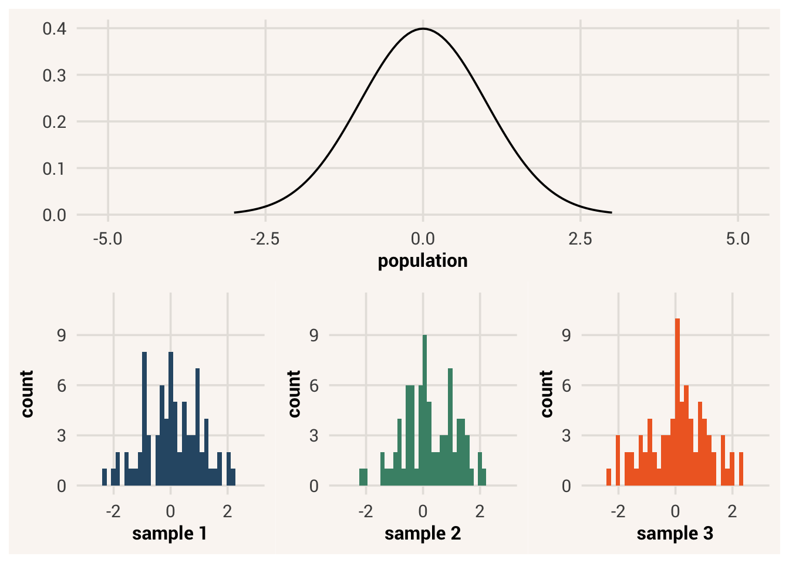
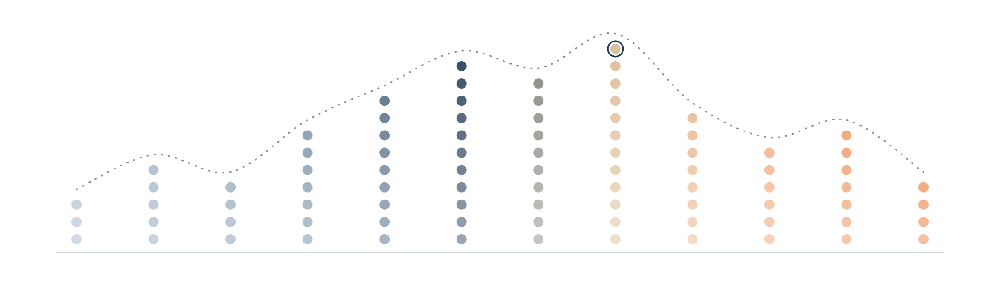
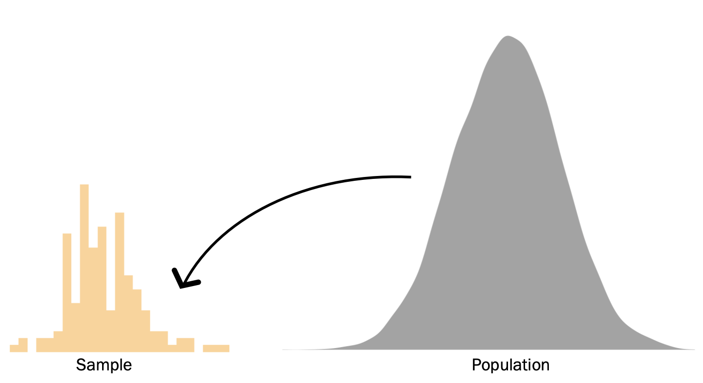

14 From Samples to Populations

We’ve spent a great deal of time so far learning about how to pull insights from sets of data - what the distribution of a variable looks like, how to predict new values based on others, how likely the data are to come from a process we thought of, etc.
Ideally, these insights are useful not just for describing this dataset, but for many other observations you didn’t record. We hope that our statistical results are good estimates of how things are in the wider population. If so, we can make more general claims about broad topics that we’re interested in, like human psychology.
But we usually don’t have access to the entire population. Instead, we have to collect a smaller sample and hope that it can stand in for everyone else. Well, we can do more than hope, but we need to follow some logical procedures called statistical inference1 that guide us on how we can deduce information about the population given a sample dataset, and how confident we can be about that deduction. In this chapter we will start learning about the principles of inference.
14.1 Samples vs. populations
First, let’s define what specifically we mean when we say “population”. The population of some data is the distribution of all possible values of those data. In psychology, the population is often all people who exist and who will ever exist.
In contrast, a sample is a subset of the population. Previously we used a dataset from students in a stats class and evaluated the distribution of various characteristics like heights, but those data are not the only height values out there. Many more people have heights than are included in our dataset. Our dataset is a sample, because it includes some but not all of the people who have height.

Of course, people are not the only population one might be interested in. If you’re in astronomy, you could be interested in the population of all stars in the universe. If you’re a biologist, maybe you’re interested in all bacteria of a certain strain. Populations don’t have to be physical entities, either; as an engineer building a bridge, you may be concerned with the population of all possible force vectors that your bridge could experience.
Even if you are studying people, your population might not consist of all people. If our interests are narrower, the population might instead be something like all people of a certain demographic characteristic, all children 4-6 years old, etc. Maybe we don’t care about understanding the typical height of all people, but rather college students specifically. Or perhaps we’re only concerned with students in our own class - in that case our sample is our population of interest, and we don’t have to do any inferential statistics at all!
Usually though, we are interested in more general populations in the world. In those cases, it is impractical or even impossible to measure every datapoint from the population. A sample is all we have. Thus, it is very important to have a good idea of what population we are trying to understand - this is one of the necessary parts of defining a good statistical question. Only then can we use our sample for inference about that population.
Now, what makes a good sample? If we want to use a sample to make inferences about a population, we want that sample to be representative of that population. In other words, the sample distribution should closely resemble the population distribution.
representative sample = a sample whose key characteristics closely resemble the characteristics of the population it is meant to represent.
Political polling is a good example of why it’s important to have representative samples. Sometimes, polls can be incredibly accurate at predicting the outcomes of elections. For instance, the polling company FiveThirtyEight correctly predicted electoral outcomes for 49/50 states in 2008 and for all 50 states in 2012. They did this by combining data from many different polls, each of which included data from about a thousand likely voters. If we consider the population of interest during an election to be all the votes of people who cast a vote, then in this case the intentions of that 1000-person sample very closely matched the overall voting behavior of the entire population. Yet, the 2016 US Presidential election was noteworthy for how poorly polls predicted the outcome (Clinton was strongly favored to win by many polling samples, but the electorate behaved differently). This is because the people who came out to vote for Donald Trump were not well represented in the poll samples. Bad predictions were made because of bad sampling2.
Do you think the studentdata dataset we saw previously is a good representation of what the broader population of human heights is like? Is it a better representation of college student heights specifically? What if our sample came only from Scripps College3, given what we’ve seen about the association between sex and height? Before you do research and publish your results, make sure you are able to collect a sample that speaks to the population you are interested in.
14.2 Sampling processes
How do data make it from the population to being in a sample? The selection of certain data points over others is called the sampling process, and will affect how representative the sample is.
Many samples are based on practicality, where the sample is comprised of data points that were the easiest to obtain. This is called convenience sampling. The samples are chosen in a way that is convenient to the researcher. In real life, most studies are at least somewhat convenience samples. If you do a thesis on human cognition but collect data from other students, this is inherently a convenience sample because it is much easier for you to access other students than people from the opposite side of the world.
convenience sampling = the process of collecting data for a sample based on their ease of access.
Convenience sampling sometimes does a good job of creating a representative sample, but can instead create a non-representative sample if there’s some reason for why the sample is easier to collect that also affects the variables being studied. E.g., can you think of any way college students might differ from other people? Would those differences matter for understanding cognition processes?
There are other sampling methods besides convenience sampling that aim to overcome its limitations. But the best way to pick a sample that most closely resembles the shape, center, and spread of the target population is to draw a random sample. If we treat the population as a probability distribution, then the only thing that affects the chance a data value will be included in a sample is the probability density corresponding to that value in the population. This is usually impractical, though. For a psychologist, it’s not as easy to contact, recruit, or even know about some people in the population compared to others4. For an ecologist, it is much easier to access animals that live in one site nearby, versus the same species that lives in a remote canyon. You can probably think of examples in other fields of study that make it hard to access every member of the population.
random sampling = a sampling method where the only thing that affects the probability of inclusion of a value in the dataset is the proportion of the population with that value.
Notably, even though random sampling is the most representative sampling process (i.e., has the best chance of creating a representative sample), that doesn’t always mean the sample you end up with will look exactly like the population, or even other random samples from the same population. We saw this idea previously in Chapter 8 when learning about probability distributions - because a sample is a finite number of observations, randomness will mean the sample’s data distribution will be jagged and not perfectly the same as the probability distribution from which it was drawn.
The same is true of sampling from populations. Since a sample is a smaller number of data points than all possible values in the population, even a random sampling process won’t produce the exact same distribution each time a sample is drawn. This fact is called sampling error. Sampling error is not a mistake or a problem with the data collection process - it is simply a fact of life when we are drawing a smaller subset of data from a larger subset.
sampling error = the difference between a sample statistic and the population it comes from, which is due to random sampling.
14.3 Sampling distributions
The existence of sampling error leads to some complicating consequences when we try to estimate estimands about a population using data from a sample. To see what these are, let’s simulate a data collection process as if we were recruiting subjects for a research study. We will define the population as some probability distribution, and then draw a sample from that population. We will use random sampling so that we can see, even in the best case scenario where every person in the population has a chance of being in the study, that complications still arise.
In this simulation we sampled 50 “people” from the population. Then we plotted a histogram of the sample data. We know the population is normally distributed, because we defined it that way in the simulation. But our sample data is not the same shape - it’s vaguely normal if you squint at it, but there is a lot of jaggedness and holes in the distribution that we wouldn’t see in a nice smooth normal probability distribution.
The shape of our sample isn’t the only thing that’s a bit off from the population. Next, let’s say our estimand in this study is the mean of the population for the variable x. So to estimate that estimand, we calculate the mean of the values in our sample:
Notice something about this estimate relative to the population mean that we defined in the simulation: we specified that the population has a mean of 10, but the mean in our sample was 10.20. This is close, but not exactly the same.
Now imagine we ran a second study to replicate our estimate. Here is a second sample, drawn from the same population:
This mean estimate is 9.32, which is even further away from the true population mean and in the opposite direction from our last estimate.
Say that instead we replicated our study 10 times, drawing an entirely new sample each time. Here are the means estimated in all of those samples:
| Sample number | Estimated mean |
|---|---|
| 1 | 9.75 |
| 2 | 10.60 |
| 3 | 10.03 |
| 4 | 9.92 |
| 5 | 9.88 |
| 6 | 9.90 |
| 7 | 10.17 |
| 8 | 9.94 |
| 9 | 10.33 |
| 10 | 10.19 |
The sample means are similar, but not exactly the same as the mean in the population. Additionally, these different sample means are similar to each other, but not exactly the same sample to sample. There’s variation in the estimates we get in different finite samples of data.
Finally, let’s take this thought process to a perhaps absurd extreme. Imagine we replicated our study 10,000 times, drawing a new sample and calculating the sample mean each time. We could save all those estimates and plot a histogram of them:
We clearly see a distribution. It’s not a distribution of the population values - we know that distribution has a standard deviation of 2, which is different than what we see here. Instead, this is a distribution of mean estimates we could get, by drawing a sample of data from the population and calculating the mean on just the sample data values. The distribution of sample estimates is called the sampling distribution.
sampling distribution = the distribution of estimates that are possible to get in a data sample drawn from a population, where the variation is only due to random sampling.
Notice the range of possible estimates in this distribution. Even though the population mean is 10, sometimes we can get samples that tell us an estimate of 10.5, 9.5, even as low as 9. One population value, many possible estimates.
Also notice the range of possibilities in this different population, with a mean of 11 instead:
There are many possible estimates that come from sampling this population as well. In fact, an estimate of 10.5 is also possible in this population. So one estimate can be produced by many possible populations!
14.4 Attributes of sampling distributions
We’re talking about several types of distributions right now, so as a reminder:
- a population distribution consists of all the possible and probable values of some variable in the world. We usually can’t see the whole population at once, so it’s useful to think of it as a probability distribution for individual data points.
- a sample distribution is all the data we have in a study sample - it consists of data points drawn from the population probability distribution.
- a sampling distribution consists of estimates calculated from separate samples.
We don’t typically get to see a full sampling distribution outside of simulations because we’re not collecting data for thousands of replications of one study. It’s more of a theoretical entity - it’s a probability distribution of sample estimates we could get, before we collect a sample and do analyses on it. While the population distribution is a probability distribution for what individual data point values can be, the sampling distribution is a probability distribution for what separate sample estimates can be.
Thinking about this theoretical entity helps shape our expectations about what could come about from running research studies. Knowing about the sampling distribution means knowing that estimates will vary sample to sample, and the pattern of variation will follow the shape of a sampling distribution.
Additionally, thinking in this way about the range of possibilities different data samples can give us allows us to talk about attributes of these possibilities as a collective. For instance, notice where the center of the distribution is on the blue histogram of sample_means, and compare that to the “population” mean. We can calculate this to make the comparison easier:
TipExercise
Calculate the mean of the sampling distribution vector we created in the prior code cell.
TipReveal the answer
sampling_dist_mean <- mean(sample_means)
This value is really really close to the population mean - much closer than most of the individual sample estimates are. This implies that, while any one sample we draw probably won’t give us the same estimate as the truth in the population, it is more likely for us to get a sample estimate that is closer to the truth than it is to get a sample estimate that is far away. The different sample estimates will also vary around the true value of the estimand in the population.
In addition, notice the spread of the sampling distribution. Since any one sample is unlikely to give us an estimate that matches the truth in the population, it’s useful to know how far away from the truth we will tend to be. We know from Chapter 5 that the standard deviation of a distribution tells us the typical distance between a randomly-selected data point and the mean of the distribution. Likewise, applying that concept to sampling distributions, the standard deviation of the sampling distribution tells us the typical distance between any one sample estimate and the true value in the population. This standard deviation of the sampling distribution has a name - the standard error.
standard error = the standard deviation of a sampling distribution.
According to this, our sampling process will tend to give us estimates that are about +/- 0.28 away from the true effect value. So if we collected a random sample of 50 people from the population and found the mean of their scores, we would expect our mean estimate to be off from the truth by 0.28 on average.
14.5 Sampling distributions of different estimands
Any estimate we could calculate in a data sample has a corresponding sampling distribution. For instance, if our estimand in a research study was the effect of number of siblings on education attainment and we built a statistical model of that data generation process, we would focus on the \(\beta_1\) model coefficient as our estimate of the effect. But the exact value of this effect estimate hinges on the specific data sample we fit the model in.
Here’s a simulation where we treat the larger GSS dataset we worked with previously as if it were the population of all possible people, and then we repeatedly draw random smaller samples from the “population” using a function from dplyr, slice_sample(). slice_sample() takes as arguments a data frame to sample from and n=, a number of samples to draw. In addition, we want to set the argument replace= to TRUE. Doing this allows for us to draw the same value multiple times into a sample, just like it’s possible for two people in a real study to have the same value.5
We now have many effect estimates, as if we had run this study 10,000 times. Because of sampling error, there will be slightly different association estimates between number of siblings and education attainment implied by the sample data. Here are scatter plots from two of the samples so you can see this visually:
In sample 1, there is a strong negative effect of sibling number of education attainment. The expected level of education attainment in people with 5 siblings is much lower than in people with no siblings.
In sample 2, while the effect was still estimated to be negative, it is much weaker. People’s expected level of education only varies a little bit depending on their number of siblings.
And here is the sampling distribution of the \(\beta_1\) estimate from all the replication studies we ran:
According to this distribution, most effects we would estimate using our sampling process would be negative, but the strength of the negative association can vary by a lot. Most of the time it is negative, but it can be a small negative effect or a large one. Sometimes, the effect is even estimated to be positive!
If we were targeting the prediction accuracy of the model as our estimand instead, you guessed it - that accuracy estimate will also vary depending on what sample we draw.
TipExercise
Complete the simulation below to save the model \(\sigma\) estimates from all the different samples.
Sometimes a model will be quite accurate for predicting the data it was fitted to, but that doesn’t mean it will have the same accuracy when predicting future data.
14.6 Influences on the sampling distribution
How much standard error there is - and therefor how much variation we can expect among sample estimates - is influenced by a few factors.
14.6.1 Sample size
In the popular conscious, it seems like “sample size” ranks right under “correlation is not causation” in terms of critiques about research studies. There’s a sense that smaller samples are worse than bigger samples. Why is this? One of the big reasons is the effect sample size has on the standard error of an estimate.
In the simulation example above when we sampled many times from a population, each of our samples was 50 people. This is a smaller number than the total population, so we get different samples and thus different sample estimates. In fact, just how much smaller a sample is has an influence on how different the sample will look relative to the population, and thus how variable the estimates are.
For example, here are the distributions of two N=50 samples drawn from a normally-distributed population:
This image is familiar to us by now. These distributions are roughly normal, but they don’t exactly look like each other or the ideal normal distribution they came from.
Conversely, here are distributions of two N=500 samples:
These again are little bit jagged, but much less so. They’re looking much more similar to each other and to the population distribution.
If we go even bigger:
Now these huge samples are virtually indistinguishable from each other and the population. This phenomenon is known as the law of large numbers - the more data points that are in a sample, the more that sample resembles the population distribution it came from (if we use random sampling).
law of large numbers = the principle that, as sample size increases, the sample distribution will more closely resemble the population distribution.
Not only do the sample distributions look more similar as they get larger, estimates calculated on them will become more similar. Below are three sampling distributions plotted together for comparison.
We can see that the estimates that come from samples with N=5 are super variable. The sampling distribution for this sampling process is super spread out. Meanwhile the sampling distribution for N=50 samples is narrower. The sampling distribution for N=500 samples is almost a straight line in the plot, meaning that almost every sample mean estimated in these big samples is very close to the true population mean. These samples were drawn from the same population. We even drew the same number of samples: 1,000. The only difference in these simulations was how many data points were in each sample. So the bigger the sample size, the smaller the standard error, and the more consistent and accurate our estimates are.
14.6.2 Measurement error
However, even in a very big sample, our estimates can still be variable if there is measurement error in our variables.
Here’s another simulation to see why. First, we will simulate N=500 samples such that variables x and y are strongly linearly associated with a Pearson correlation of 0.8. We will simulate 1,000 samples to see the sampling distribution.
Note
We can simulate bivariate normal data by relying on some data generation priciples we learned last unit. First, a general linear model predictor equation creates the mean \(\mu\) of the conditional probability distribution for \(Y\), so when simulating a variable y with rnorm() we can pass mean = 0.8*x to encode this predictor equation. Second, one of the equations we learned about in Chapter 11 was \(R^2 = 1 - \frac{Var(Y|X)}{Var(Y)}\). Solving for \(Var(Y|X)\) (aka the standard deviation of the conditional probability distribution for \(Y\), which is sd= in the rnorm() simulation code), we get \(Var(Y|X) = Var(Y)(1-R^2)\). If we simulate y to have a variance of 1, we can simplify and pass sd = sqrt(1-0.8^2) to the rnorm() function to encode this conditional variance.
There’s some standard error (0.015) in our sampling distribution because 500 is less than infinity, but the sample estimates are close and the sampling distribution is centered on the true correlation.
Now however, we will modify our simulation. If x and y are the true, latent values these variables have, we might not be able to measure them perfectly when we collect data. Let’s see what happens if we there’s some measurement error. We’ll do this by creating new variables x_meas and y_meas that are generated probabilistically from x and y with some random noise.
The standard error of the x_meas and y_meas correlation is almost twice as large as it was in the correlation between the true values of x and y. This is because measurement error essentially adds more uncertainty to what the sampled data values will be. With more possibilities of sample distributions, there are more possibilities of sample estimates and thus a wider sampling distribution. So not only does sampling error create uncertainty in sample estimates, measurement error adds even more.
Note
You might also notice that the mean of the sampling distribution is lower than the true correlation of 0.8. This is because measurement error also biases sample estimates away from the true population value. We’ll talk more about estimate bias next chapter.
14.6.3 Complicated estimands
Finally, some estimands are more complicated to estimate than others. By complicated, we mean they take multiple mathematical steps. For instance, while the association between x and y was the estimand in the above example, we could instead be insterested in the difference is associations, say between x and y and x and z. Thus our estimator is not \(cor(X,Y)\), but \(cor(X,Y) - cor(X,Z)\). It’s a computation involving multiple different estimates.
When our estimator is a complicated function of multiple sub-estimates, the sampling distribution of the final estimate it produces will be more variable. This is because any error (sampling error or measurement error) in the sub-estimates of this computation get propagated and amplified. Here is a simulation to demonstrate this:
While the standard error of the \(cor(X,Y)\) estimate was 0.015, the standard error of \(cor(X,Y) - cor(X,Z)\) is 0.034 - more than twice as much despite the same sample size and no measurement error. The sampling distribution is centered on the true correlation difference, but the estimate derived from any one sample is going to be farther away from that truth on average because of error propogation in the estimator.
14.7 Inference
Now we know what’s possible to happen when we draw a sample from a population. The samples can be different from the population and each other, so they can give us sample estimates that are different from the true population value and from each other.
Since we can’t typically see the population or sampling distributions, and usually only have one sample distribution to calculate one estimate in, there are implications for how we make conclusions about what the truth of the world is given what we see in our data. We’re already well aware that different data generation processes can create similar data distributions, so we can’t assume that the model form we fit in a data sample is the one true data generation process even if we see a strong effect estimate or low accuracy estimate. Now we also know that sampling error can give us different estimates for the model coefficients than is reality. This means, even if we do luck out and hit on the true data generation process form with our model, the specific estimates we fit in the model might not be correct!
So what do we do about all this uncertainty? This overall practice - using limited sample information to make conclusions about the population - is called inference. While descriptive statistics are mathematical processes that tell us summaries about a dataset in front of us, inferential statistics are mathematical processes that tell us what conclusions we can make about an unknown population and how confident in those conclusions we can be.
We’ve already covered the first thing to know about inferential statistics - that samples can be different than population distributions, and that different sample estimates will form a sampling distribution. We use different terms for these different ideas to keep them straight. First, the quantity in the population that we want to know about, as we know, is the estimand. We might also call this the population parameter when talking about it as a specific
The next thing to know about inferential statistics is that while we can’t be sure what the true population value is, we can calculate how likely our single estimate is to come from different possible population values. This thought process is similar to when we were checking model fit to data in Chapter 13. There, we calculated the likelihood of the data given a fitted model form and coefficients. If the data were really unlikely under the model, we decided the model was probably not right. If the data were more likely under Model A vs. Model B, we decided Model A was more likely to be the true data generation process than Model B. In neither of these cases did we arrive at the Truthtm from looking at just one sample of data, but the data helped us eliminate possibilities.
The same principle applies when thinking about the true population value of an estimand. Given things we know about the estimator we use, the amount of measurement error, and sample size, we can calculate how likely it is to get an estimate like the one we got in our sample from various different possible population values. If it is very unlikely to get our estimate from a certain population value, we cross that population value off our list of consideration and narrow the range of possibilities. If one population value is more likely to create our estimate than an alternative option, we get rid of the less likely option. Statistical modeling and inferential statistics are processes of elimination for our ideas about the world. ?sec-ch15 will discuss how we do this when we don’t have a preconceived idea of what the population value is, while ?sec-ch16 will discuss how we do this when we have existing hypotheses about statistical model forms and coefficient values.
14.8 Chapter summary
14.8.1 Learning goals
After reading this chapter, you should be able to:
- Explain the difference between a sample, population, and sampling distribution
- Simulate data samples and sampling distributions from a pre-defined population
- Find and explain the standard error of a sampling distribution
- Explain what influences the width of a sampling distribution
14.8.2 New concepts
- representative sample = a sample whose key characteristics closely resemble the characteristics of the population it is meant to represent.
- convenience sampling = the process of collecting data for a sample based on their ease of access.
- random sampling = a sampling method where the only thing that affects the probability of inclusion of a value in the dataset is the proportion of the population with that value.
- sampling error = the difference between a sample statistic and the population it comes from, which is due to random sampling.
- sampling distribution = the distribution of estimates that are possible to get in a data sample drawn from a population, where the variation is only due to random sampling.
- standard error = the standard deviation of a sampling distribution.
- law of large numbers = the principle that, as sample size increases, the sample distribution will more closely resemble the population distribution.
14.8.3 New R functionality
To be clear, professional pollsters are typically very careful about how they collect their samples in order to infer the wider population. 2016 was a weird year, where people who normally didn’t vote and thus shouldn’t be included in polls came out to vote in ways that traditional polling methods didn’t anticipate.↩︎
A lovely little women’s college in Southern California.↩︎
The data in psychology results are often based on an over-representation of US psychology students, since universities require their psych majors to participate in studies.↩︎
A simulation like this, where a sample of data is treated as a population from which repeated random draws are taken, is called a bootstrap simulation. Bootstrap simulations are pretty powerful because, despite the “population” not being the same as the true population, repeated samples drawn from it approximate the spread of the true sampling distribution really well.↩︎